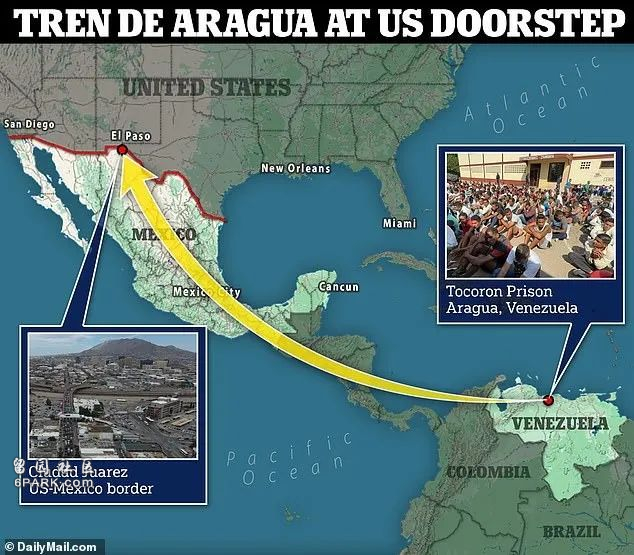
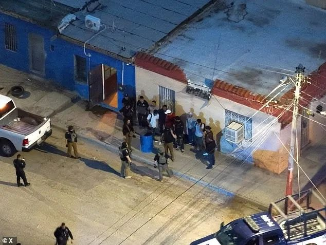

远在千里之外的委内瑞拉臭名昭著的超级帮派“阿拉瓜列车”（Tren de Aragua），得益于拜登开放边境的政策，大肆绑架勒索非法移民发了大财，已将其总部迁移至美墨边境的墨西哥城市华雷斯（Ciudad Juárez）。
据《每日邮报》报道，这个帮派以其残忍手段和庞大的组织规模闻名，在委内瑞拉国内横行多年，涉及毒品交易、武器走私、人口贩卖等多种犯罪活动。

近年来，随着委内瑞拉国内局势的恶化和国际压力的增加，该帮派逐渐将其活动范围扩展至邻国，最终在美墨边境的墨西哥城市华雷斯扎根，并且派遣帮派分子潜入美国建立“根据地”。
这些帮派分子从从达拉斯到纽约的整个美国掀起了令人恐惧的犯罪浪潮。根据德州官员介绍，目前已经逮捕了数十名“阿拉瓜列车”的帮派分子，边境巡逻队员也处于高度戒备状态，除了识别恐怖分子外，还要检查涌入的非法移民身上是否有帮派的纹身，这让边境巡逻队员每天都处于高压之下。
如果在川普政府时期，或者在上几任总统时期，这些人根本不会被允许入境，也就不存在检查身份的事。
上个月，FBI将“阿拉瓜列车”认定为跨国犯罪组织，并悬赏500万美元捉拿其头目Hector ‘El Nino’ Guerrero Flores。
代表埃尔帕索的国会议员托尼·冈萨雷斯（Tony Gonzales）说，“‘阿拉瓜列车’犯罪集团是邪恶的缩影。该团伙以强奸儿童、带头谋杀和制造大规模混乱而闻名。”
据称，德州执法部门正在制定一项机密计划，来应对日益严重的威胁。
绑架非法移民
感谢拜登发家致富
据了解，“阿拉瓜列车”是从一群监狱暴徒转变为世界上最危险的犯罪团伙，因为委内瑞拉政府允许监狱内帮派的存在，让这些监狱内帮派来协助管理犯人，结果是的“阿拉瓜列车”迅速崛起，2018年，该帮派开始向邻国哥伦比亚发展。
与南美洲帮派靠贩毒发家致富不同，“阿拉瓜列车”的发家之路是绑架勒索向美国进发的非法移民，如果交不出赎金的，女性会被绑去卖淫，男性要么加入变成帮派的一份子，要么被杀。
在拜登上台后，“阿拉瓜列车”迎来鼎盛时期，他们控制了前往墨西哥的火车，从全世界各地的非法移民身上搜刮钱财，只要缴纳的钱足够多，他们会亲自将非法移民送到美国境内，而如果没钱的话，他们就将非法移民监禁起来，直到这些被绑架者的亲属送来现金。如果没有缴纳赎金，女性同样会被送去妓院。

就在三周前，墨西哥警方在华雷斯解救出22名被“阿拉瓜列车”绑架的非法移民。
可怕
在美国掀起犯罪浪潮
他们不仅在墨西哥犯罪，还派遣大量的帮派分子伪装成非法移民进入美国，在美国实施犯罪，比如报复委内瑞拉的前警察，上个月，居住在迈阿密的委内瑞拉前警察何塞·路易斯·桑切斯·瓦莱拉（Jose Luis Sanchez Valera）就被“阿拉瓜列车”帮派分子报复杀害。
他们还和纽约的帮派合作，打劫纽约居民。不久前，纽约一名62岁女性在布鲁克林街头遭到飞车抢夺，经调查也是“阿拉瓜列车”的暴徒所为。
据美国边境巡逻队称，至少有 70 名“阿拉瓜列车”暴徒在试图通过南部边境潜入美国时被捕。但这些都是有纹身识别的，没有纹身的人恐怕已经被放进美国社区，还有更多的人没有被巡逻队发现，而是悄悄越过边境潜入美国。
在未来，如何有效应对类似阿拉瓜列车这样的跨国犯罪组织，将成为美墨两国以及整个拉美地区面临的重大挑战。如果边境危机持续失控，将有越来越多的恐怖分子和暴徒进入美国。